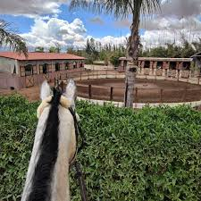
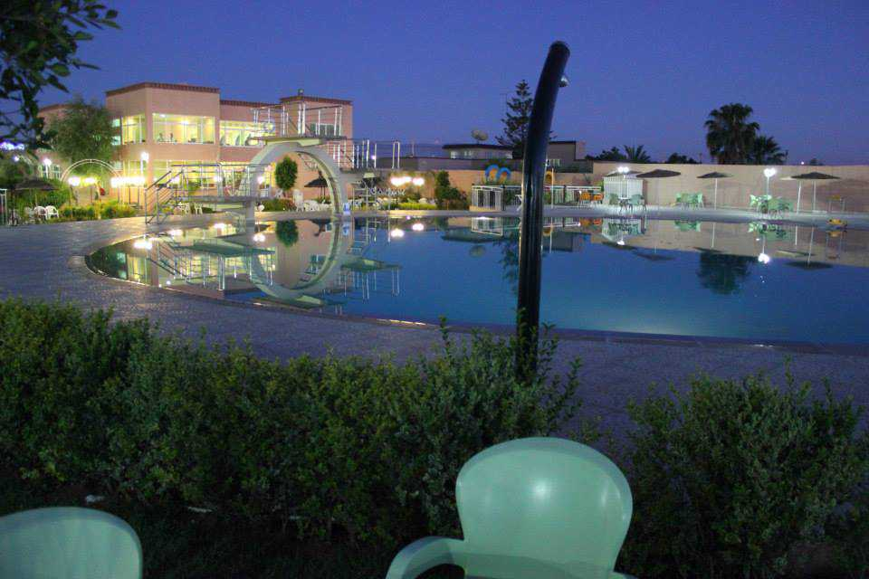
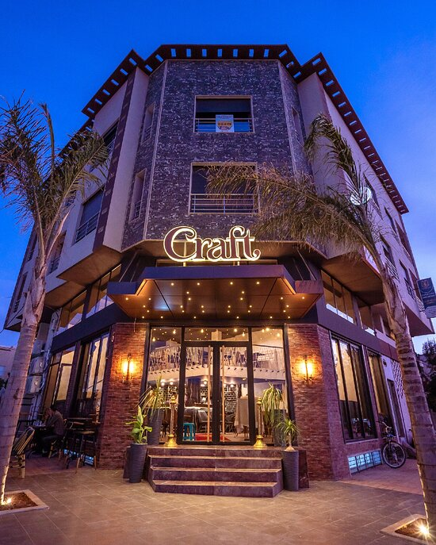
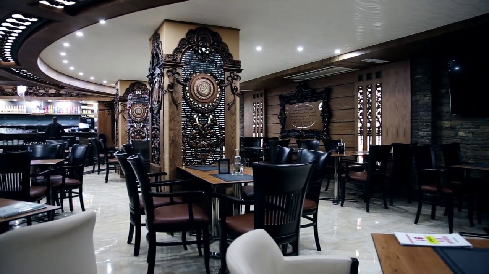

Club Équestre California
Centre équestre moderne offrant des cours d'équitation et des balades à cheval dans un cadre magnifique.
Plus d'informations
Trocadero Resort Park
Parc de loisirs avec piscines, restaurants et activités familiales dans un cadre verdoyant.
Plus d'informations
Parc Écologique
Espace vert préservé idéal pour les promenades et l'observation de la nature locale.
Plus d'informations
Café
Il y a plusieurs cafés magnifiques et historiques à Oujda contenant beaucoup de nourriture et des endroits pour les enfants.
Plus d'informations
Jardin Lalla Aicha
Jardin public paisible avec fontaines et espaces de détente au centre-ville.
Plus d'informations
Café assitana
Café moderne avec terrasse offrant une vue panoramique sur la ville.
Plus d'informations